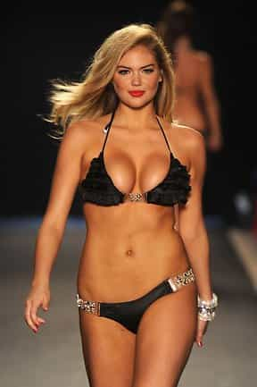

< < < Back
Major Supermarket Bans The Sale Of Men’s Magazine After “Rape Culture” Petition – Return Of Kings
Magazines like Zoo promote attitudes that lead to violence against women.
– Laura Pintur, who is yet to provide any figures about how many of the magazine’s millions of readers over a decade have committed violence against women.
Major Australian retailer Coles has banned the sale of men’s magazine Zoo Weekly after a Change.org campaign orchestrated by feminist group Collective Shout’s Laura Pintur. Coles is part of the same conglomerate as department store Target, which ripped GTA V from its shelves for the “misogyny” of allowing players to kill women (in addition to about four times as many men). The censorship-loving Collective Shout and its keyboard supporters are now calling for Coles’ rival Woolworths Supermarkets to follow suit.
Pintur and one employee of Coles, “Shannen”, claim the magazine promotes “rape culture,” the most poorly defined and evidentially underwhelming “culture” in human history, aside from maybe David Icke’s “lizard people” conspiracy. Australia is a nation of some 25 million people and (as of writing) under 40,000 people have signed the petition, which equates to 0.16% of the population (and I have spotted many signatures from outside Australia).
Signing a petition is an extremely simple, passive act and there are probably 50,000 “causes” in Australia where you could find 40,000 people willing to non-strenuously sign or sign up for something, especially when badly supported buzzwords like “rape culture” are used to kick up a frenzy.
In a system that is generally two-party, only a few shades less so than America’s, and where elections are fought bitterly between differing, incompatible ideologies, are we seriously going to let such a small minority decide what is or isn’t sold on store shelves? Many popular books, films and magazines could provoke 5% in a population who want to see it banned or greatly restricted for the other 95%.
Censorship has gone wild and Laura Pintur is a mindless hypocrite
“Feminist advocacy” where a petition organizer assiduously promotes herself and her image to get a side career is common, from “model” and false rape threat accuser Aurelie Nix to “click bait” journalist Jessica Valenti. Laura Pintur is no exception.
It’s quaint how Pintur goes after a magazine catering to male sexuality when she ignores publications, where the audience is almost universally female, that shame and talk about women’s body issues for the purposes of pure gossip and entertainment. Before we explore that aspect in a more detailed fashion, let’s do some research on Collective Shout and start to learn how tenuous their assumptions and conclusions are.
An example: this organization will claim that the language of “lads’ magazines” can be juxtaposed with that of “rapists” and few differences will emerge. So how much finer can we slice things? The spectacularly vast majority of men who have never raped before and never will tend to appreciate large, firm breasts, like rapists, so can we establish the favoring of bigger mammaries over smaller ones as a predictive mechanism for sexual assault?
And how do we reconcile films encouraging female sexuality and male objectification, like Magic Mike XXL, with the denigration of male sexuality and so-called female objectification when it appears in Zoo? To artificially justify the distinction, many have claimed that the Magic Mike sequel is feminist and “liberates” the female libido.
Can you imagine an unapologetically sexual film, magazine or other piece of work created for male desires and preferences being described as “gender-equal” or “celebrating the male libido”?
Why not ban Fifty Shades of Grey (which has been sold at Coles)?
You think your girl’s so dewyeyed she’s never sucked dick before? She knows how it works…. Is your girlfriend a bunny rabbit? A fragile ricepaper arrangement? No? Then how about you let her know she’s being f**ked?… she’ll like you taking charge like a real man.
– A quote Laura Pintur uses to argue that Zoo Weekly objectifies women and treats them like a man’s plaything. It seems she has not read Fifty Shades of Grey or a plethora of other female-centered novels and magazine publications.
Zoo Weekly, regardless of whether you find its language crass at times, unabashedly gives readers some hard truths about the sexual marketplace and female psychology. In a world where typically women choose the dominant alpha over the smart “nice guy,” teaching men to treat women as a gentleman would will largely get them nowhere, unless they have the wealth, status, or physique of a member of the tiny elite.
Because Fifty Shades of Grey is aimed at women, Pintur won’t bat an eyelid or call for its removal from bookstore shelves. What she despises at her very core is a publication that caters to men in its verbalization of these realities. In her mind, the expression of such sexuality can only be condoned when women are the consumers. Zoo Weekly‘s ethos promotes rape culture, whereas analogous female heterosexual desires constitute female free choice or are left completely unexamined.
“Pro-misogyny” magazines for women are much more prolific than men’s magazines

An entire magazine industry, paid for by female readers and advertising dollars aimed at them, exists to either stalk female celebrities and show the flaws in their bodies, or present usually unobtainable notions of celebrity feminine beauty.
Turn up to most doctors’ surgeries in the Western world or stop near a supermarket checkout and you are immediately accosted by a veritable menagerie of women’s magazines. Three-quarters of the subject matter centers on female journalists (or photographers) taking explicit or implicit potshots at other women for the state of their bodies. Much of the rest of the material concerns the presentation of female body ideals even women in their teens and 20s have no chance of emulating without a combination of digital alteration, professional makeup, and perhaps copious cosmetic surgery.
This magazine industry is a distinctly female phenomenon, much more popular than fat-shaming, the subject of Roosh’s appearance on Dr. Oz this year. The “misogyny” of men fat-shaming women is perennially attacked but the constant humiliation women inflict on each other, directly by those involved in producing these publications and vicariously by the women who pay to read them, is given an unequivocal free pass.
Laura Pintur and her gang of do-gooders are reticent to talk about this. They have also paid precious little attention to the willing participation of tens of thousands of girls during Zoo Weekly‘s history, from the cover girls and other main models to the everyday women who send their pictures in for their own desire to be sexualized. They are simply moderately or hardly known partners-in-crime with truly famous self-objectifiers like Kate Upton.
This is not my first ROK article to point out the inconsistency applied by feminists and other SJW activists in their self-serving campaigns. The presentation of Pintur and Co’s message depends on an easy dichotomy: men sexualizing and objectifying women, rather than the wider issues of women willingly sexualizing and objectifying themselves, or women shaming other women via a proliferation of gossip and “general entertainment” outlets.
Feminist censorship and vilification of male sexuality (and the male gender) will awaken other men

She’s embracing her womanhood, but by ogling her you’re objectifying her. Go figure.
As moronic and selective as it is, the banning of Zoo Weekly from Coles and any other outlets will be a kick in the gut for men who realize that they are being lumped together with rapists. In the meantime, they will see that body-shaming female magazines are applauded and allowed to remain on store shelves. Fifty Shades of Grey will create some murmurs of disapproval from feminists, but never will its readers, overwhelmingly female, be accused of sponsoring rape culture.
Roosh, given his experiences in Canada recently, can tell you about false and defamatory SJW narratives concerning sexual assault. Likewise, the not so subtle implication from Laura Pintur and her supporters is that men who read magazines like Zoo are furthering rape.
Are you a rapist, a supporter of rape or just heterosexual? It seems the distinction does not matter to many feminists anymore.
Read More: The Farce Of “Rape Culture” In The Workplace